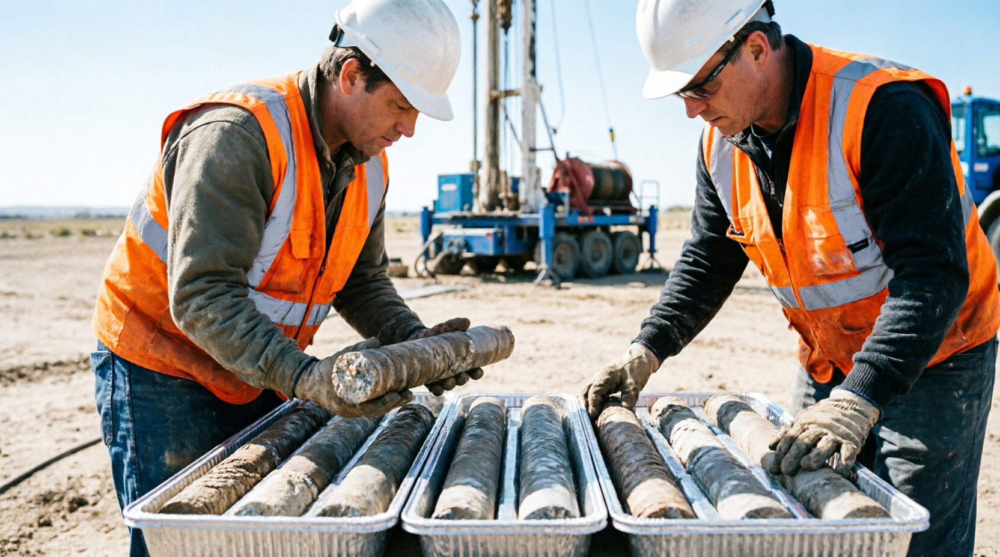
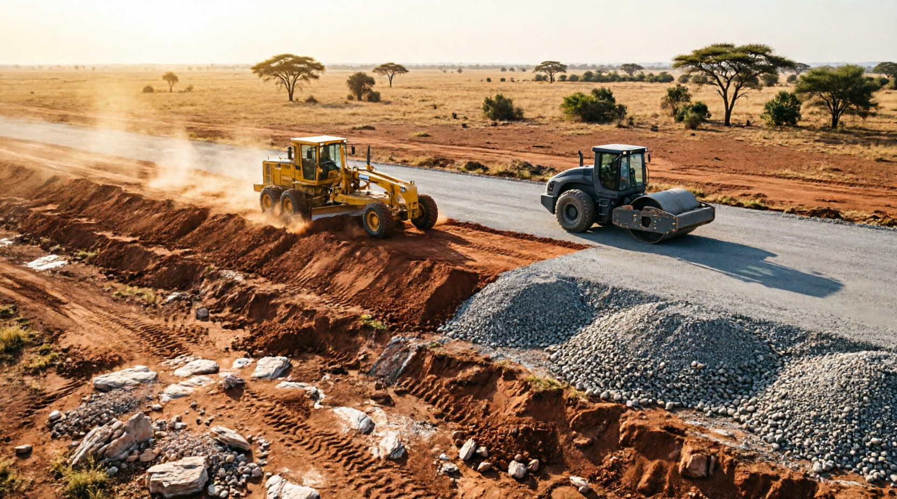
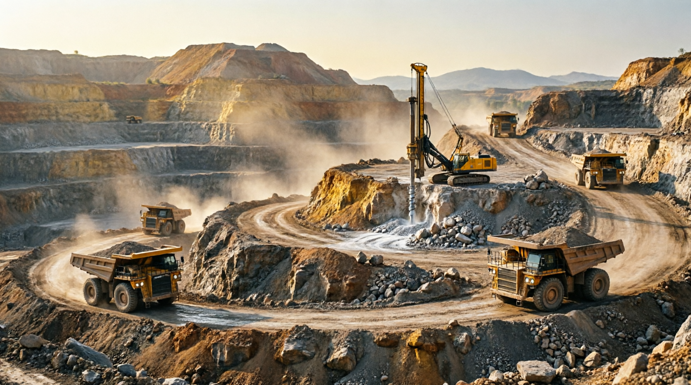
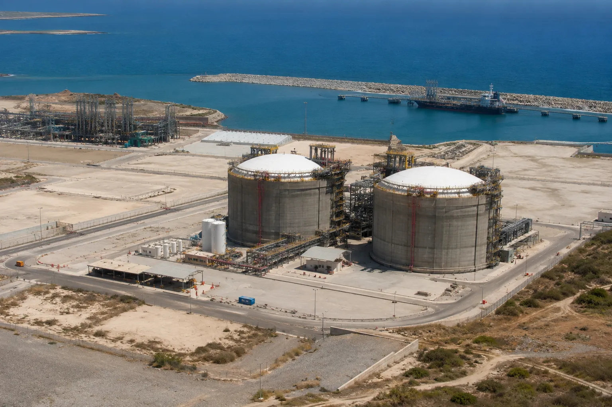
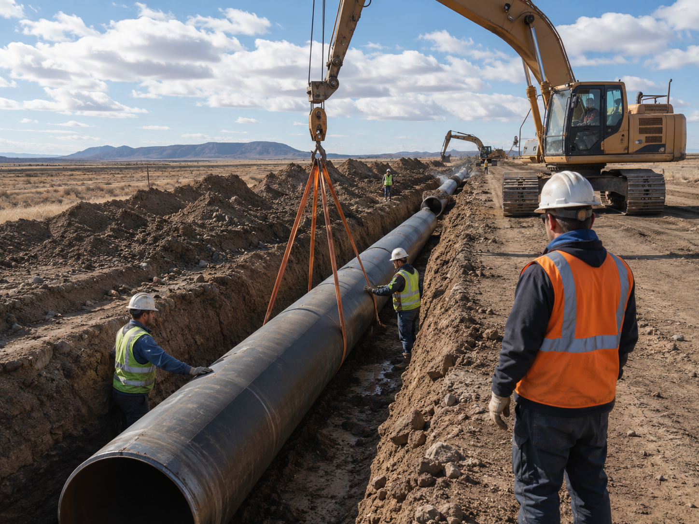
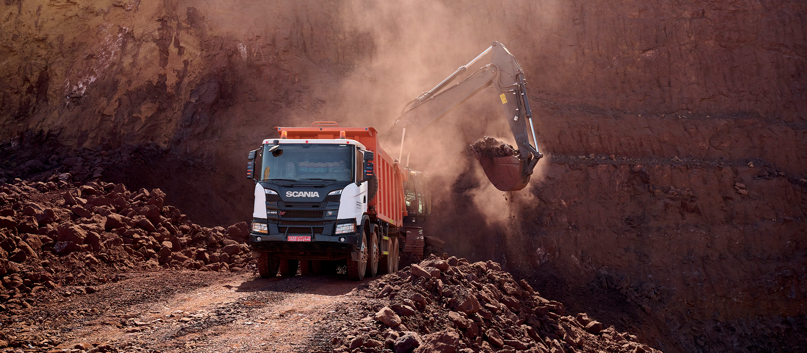
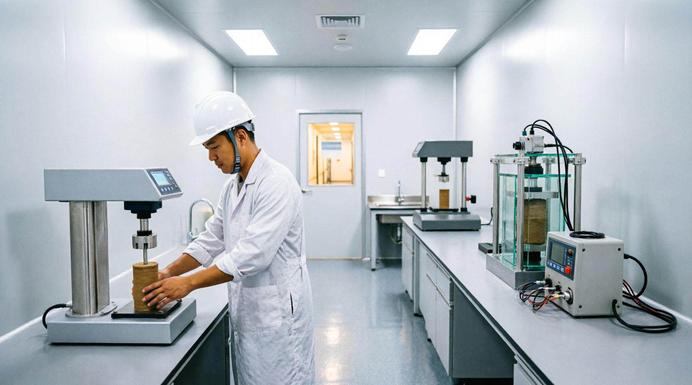

Geotechnical Investigation, Soil Testing and Foundation Engineering - delivering reliable subsurface data for critical infrastructure across Mozambique and Southern Africa
Committed to the highest HSE and QA/QC standards in everything we do.
Advanced equipment and proven methodologies, field to laboratory.
Qualified engineers and geotechnical specialists on every project.
Practical, efficient and cost-effective engineering recommendations.

GeoCore Engineering is a specialist geotechnical engineering company delivering reliable subsurface data, technical analysis and engineering solutions for critical infrastructure projects throughout Mozambique and Southern Africa.
From field mobilization to final reporting, our integrated field, laboratory and engineering teams provide the accurate data and clear recommendations you can build on.
Integrated investigation, testing and engineering services - from concept to construction
SPT, trial pits, sampling, field testing and full site characterization.
Core drilling, rotary drilling, boreholes and geotechnical exploration.
CBR, Proctor, Atterberg limits, compaction and classification tests.
Foundation recommendations and ground improvement solutions.
Groundwater investigations and monitoring for any terrain.
Reports, reviews and engineering support you can rely on.
A proven four-step delivery model that keeps quality, safety and schedule under control
Proposal, work plan, HSE preparation and rapid mobilization of rigs and teams to site.
Drilling, SPT, trial pits, sampling and in-situ testing performed by certified crews.
Controlled testing with QA/QC checks and fast, traceable turnaround of results.
Engineering analysis, foundation recommendations and a clear interpretive report.
A selection of recent work across transport, commercial, mining and oil & gas sectors

Road InfrastructureDetailed geotechnical investigations for transport corridors, including embankment characterization and borrow pit evaluation.
Site investigations and foundation recommendations for a 25,000 m² warehouse and office complex on soft soils.

Mining ProjectsExploration support and subsurface characterization for mine infrastructure and haul road design.

Oil & GasCoastal site investigation and ground improvement for an LNG logistics support base, including boreholes in coral sands and fill design.

Oil & GasRoute investigation and trenchability assessment along a 40 km gas pipeline corridor, with crossing designs and soil corrosivity testing.

MiningSubsurface characterization and haul road geotechnics for a graphite development, including waste dump stability analysis.
Modern, maintained and mobilized - ready for remote and challenging sites
Tracked rigs, 150 - 300 m capacity
HQ / NQ / T2-66 core barrels
Standard & automatic hammers
In-situ strength testing sets
Support fleet for test pitting
Groundwater monitoring instruments
Total stations & GPS leveling
Mobile testing & sampling kits

Our Maputo laboratory performs the full range of soil and material tests required for geotechnical design, with calibrated equipment and strict QA/QC control.
Get a technical proposal within 48 hours.
Tell us about your site and scope - our engineering team will respond promptly